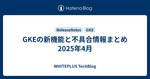

WHITEPLUS TechBlog
https://blog.wh-plus.co.jp/
株式会社ホワイトプラスのエンジニアによる開発ブログです。
フィード

エンジニアリング(プレイング|ノンプレイング)マネージャー 28
28
WHITEPLUS TechBlog
はじめに マネジメントスタイルの概要 ノンプレイングマネージャーとは？ プレイングマネージャーとは？ ノンプレイング体制での学び 主なタスク 取り組んだタイミング 良かった点（Pros） 苦労した点（Cons） プレイング体制での学び 主なタスク 取り組んだタイミング 良かった点（Pros） 苦労した点（Cons） 行き来して見えたこと まとめと今後の挑戦 はじめに CX開発グループ・アプリ開発グループでエンジニアリングマネージャー（EM）をしている仲見川です。昨年9月よりCX開発グループのEMを担当することになり半年がたちました。プレイングマネージャーと、ノンプレイングマネージャーの両方を経…
6日前

GKEの新機能と不具合情報まとめ 2025年4月
WHITEPLUS TechBlog
2025年4月にGKEのReleaseNoteに流れてきた情報から、新機能と変更内容、stableチャンネルに影響のありそうな不具合情報のみをまとめて紹介します。 4月はAI/ML関連のリリースが少しあっただけで全体のリリース数は少なかったです。AI/ML関連で非推奨が告知されたため利用している場合は確認する必要があります。 新機能 4/17 GKE Inference Gatewayが利用可能になりました GKE上の生成AIワークロードのパフォーマンス、効率、および可観測性が大幅に向上します。 GKE Inference Gatewayは以下の機能を提供します。 パフォーマンスの向上 推論に…
12日前

go.mod で管理されていないライブラリを Renovate で更新する
WHITEPLUS TechBlog
こんにちは！ コアシステム開発Gでテックリードをやっている古賀です。 Renovate 連載の第一回・第二回を通じて、Go のライブラリや Go 本体のバージョンを自動更新できるようになりました。 これまで見てきた通り Renovate は go.mod を監視しており、go.mod で管理しているライブラリは Renovate で更新することができます。 逆に、go.mod で管理されていなければ Renovate で更新できないのか？と聞かれるとそうでもありません。 今回は go.mod で管理されていないライブラリを Renovate で更新するための方法を紹介します。 やり方としては2…
20日前
GKEの新機能と不具合情報まとめ 2025年3月
WHITEPLUS TechBlog
2025年3月にGKEのReleaseNoteに流れてきた情報から、新機能と変更内容、stableチャンネルに影響のありそうな不具合情報のみをまとめて紹介します。 3月は大きなリリースや変更はなく小さな改善が主でした。HPAのdecisionsに関するログが見られるようになったのは有り難い改善です。また、k8sのJobSetに関するメトリクスも取得できるようになったので使用している場合はしっかりと監視していきたいですね。 新機能 3/28 GKE コンピュートクラス内のnodeSystemConfigフィールドを使用して、sysctlsやhuge pagesなどの特定のkubeletおよびLi…
1ヶ月前
Renovate で Go バージョンを自動更新する
WHITEPLUS TechBlog
こんにちは！ コアシステム開発Gでテックリードをやっている古賀です。 最近、セキュリティインシデントのニュースを目にすることが増え、自分の業務においても身が引き締まる思いです。 例えば弊社には Go で構築したシステムがありますが、Go バージョンを適切に上げることが脆弱性対策になります。 Go メジャーバージョンのリリースサイクルは約6ヶ月で、2つ先のバージョンがリリースされるまでの約1年間がサポート期間になります（Release Policy）。 サポート期間中にセキュリティの問題が発生したら更新版がリリースされ、それを取り込むことでセキュリティパッチを当てることができます。 これを踏まえ…
2ヶ月前
GKEの新機能と不具合情報まとめ 2025年2月
WHITEPLUS TechBlog
2025年2月にGKEのReleaseNoteに流れてきた情報から、新機能と変更内容、stableチャンネルに影響のありそうな不具合情報のみをまとめて紹介します。 2月はメトリクスや推奨、クラスタ通知といった運用面で便利になる新機能が追加されました。より安定した運用ができるようになるため有り難い改善ですね。また、Identity Service for GKEが非推奨になったりwhenUnsatisfiableのデフォルト値が変更になったりもしているため影響がないか確認する必要があります。 新機能 2/28 新しい推奨NODE_SA_MISSING_PERMISSIONSがGKE Recomm…
2ヶ月前
PHPカンファレンス名古屋2025登壇記「タスク分解の試行錯誤〜レビュー負荷を下げるために〜」
WHITEPLUS TechBlog
こんにちは！ ホワイトプラスのコアシステム開発Gエンジニアのさとうです。 先日、PHPカンファレンス名古屋2025にて「タスク分解の試行錯誤〜レビュー負荷を下げるために〜」という内容で登壇しました。 この記事では、発表した「タスク分解の試行錯誤〜レビュー負荷を下げるために〜」の内容と、Ask the Speaker やコメントでいただいた質問への回答をご紹介できればと思います。 現地で聞いたけど改めて内容を確認したい！ 現地に行けなかったから内容を知りたい！ 質疑応答が気になる！ という方のお役に立てれば幸いです。 「タスク分解の試行錯誤〜レビュー負荷を下げるために〜」の発表内容 はじめに 弊…
2ヶ月前
障害対応の予行演習会を実施しました
WHITEPLUS TechBlog
株式会社ホワイトプラスでは、システム障害に備えた障害対応の予行演習会を定期的に実施しています。本記事では、『インシデント指揮官』フレームワークに沿った障害対応訓練の流れや、訓練用のバグ埋め込み方などについて詳しくお話ししています。
2ヶ月前
Renovate で Go の依存ライブラリを自動更新する
WHITEPLUS TechBlog
こんにちは！ コアシステム開発Gでテックリードをやっている古賀です。 私たちのチームで管理しているGoアプリケーションでは、可能な限り最新バージョンのライブラリを使うように「手動でこまめに」メンテナンスを行っていました。 具体的には、Google Cloud のリリースノートを見てSDKのアップデートをキャッチアップして、対象のライブラリを手動で更新するというものです。 しかし、ライブラリの更新頻度が高いため直近の業務を優先させている期間は更新が止まってしまうことや、Google Cloud 以外のライブラリでも更新有無を定期的にキャッチアップする手間があることに課題を抱えていました。 そこで…
3ヶ月前
GKEの新機能と不具合情報まとめ 2025年1月
WHITEPLUS TechBlog
2025年1月にGKEのReleaseNoteに流れてきた情報から、新機能と変更内容、stableチャンネルに影響のありそうな不具合情報のみをまとめて紹介します。 1月ということで新機能の数は控えめですが、非推奨やセキュリティイシューがいくつか告知されています。運用しているクラスターに影響がないか確認する必要がありますね。 新機能 1/23 GKEロードバランサーサービスのユーザー管理ファイアウォールルールがGAになりました。 GKE 1.31.3-gke.1056000以降で利用可能です。 GKEロードバランサーサービスのユーザー管理ファイアウォールルールを許可することで、高度なファイアウォ…
3ヶ月前
【Go】golangci-lintでカスタム静的解析を統合する
WHITEPLUS TechBlog
はじめに Goの代表的な静的解析ツールには「go vet」「errcheck」「staticcheck」などがあります。 ホワイトプラスでは当初これらの静的解析ツールを個別でインストール・実行する方法を取っていました。 当初の実行コマンドのイメージ go vet ./... go vet --vettool=nilness ./... go vet --vettool=shadow ./... errcheck --asserts ./... staticcheck ./... しかしこの手法ではパッケージのインストールがツールごとに必要だったり、それぞれの実行コマンドを追加する必要があったり…
4ヶ月前
GKEの新機能と不具合情報まとめ 2024年12月
WHITEPLUS TechBlog
2024年12月にGKEのReleaseNoteに流れてきた情報から、新機能と変更内容、stableチャンネルに影響のありそうな不具合情報のみをまとめて紹介します。 12月ということでリリース数は少なめになっていますが、k8s 1.32の対応やcgroup v2への自動更新など注意しておく必要のあるリリースがあります。 新機能 12/17 Rapid channelでKubernetes 1.32が利用可能になりました Kubernetes 1.32の詳細は以下のリリースノートを参照してください。 github.com 12/16 1.28.3-gke.1430000以降を実行しているGKEク…
4ヶ月前
Docker Desktop 4.35で追加されたApple Silicon Mac専用のハイパーバイザーが開発体験を改善するか検証する
WHITEPLUS TechBlog
先日リリースされたDocker Desktop 4.35でApple Silicon Mac専用のハイパーバイザーである Docker VMM (Virtual Machine Manager) がベータ版として追加されました。 docs.docker.com www.docker.com これはApple Silicon Macでのみ利用できるコンテナに最適化された新しいハイパーバイザーです。Linuxカーネルとハイパーバイザーレイヤーの両方が最適化されていて、一般的な開発タスクにおいて従来のApple Virtualization Frameworkと比べ大幅にパフォーマンスが向上されるよ…
5ヶ月前
GKEの新機能と不具合情報まとめ 2024年11月
WHITEPLUS TechBlog
2024年11月にGKEのReleaseNoteに流れてきた情報から、新機能と変更内容、stableチャンネルに影響のありそうな不具合情報のみをまとめて紹介します。 11月も多数のリリースがありましたが、中でも最大65,000ノードのクラスタに対応したこととコントロールプレーンに対するDNSベースのアクセスは大きなリリースでした。一般的なWebサービスではそこまでの数のノードが必要になることはないため影響はありませんが技術的に面白いですし、コントロールプレーンに対する新しいアクセスはBastionサーバーを用意しなくてもセキュアにアクセスできるようになって便利になります。どちらも公式のブログで…
5ヶ月前
LaravelのGateとPolicyの仕組みを理解！認可を使いこなせるようになるために
WHITEPLUS TechBlog
こんにちは！ ホワイトプラスのコアシステム開発Gエンジニアのさとうです。 開発をしていく中で、複雑化したシステムを改善するのに認可を整理すると良いかも…という話題が上がりました。 PHP・Laravelを使って開発をしているのですが、Laravelの認可機能については「そういうものがあるらしい」程度の理解しかありません。 そこで、この記事では改めてLaravelの認可について調べてみたことをまとめました。 Laravelの認可の設定がよくわからない ユーザーの属性を調べるif文がいろいろなところに散りばめられている こんな悩みをお持ちの方は、ぜひご一読いただけると嬉しいです。 認可とは？ 認可…
6ヶ月前
GKEの新機能と不具合情報まとめ 2024年10月
WHITEPLUS TechBlog
2024年10月にGKEのReleaseNoteに流れてきた情報から、新機能と変更内容、stableチャンネルに影響のありそうな不具合情報のみをまとめて紹介します。 先月のリリースが少なかった影響か10月は多数のリリースが行われました。中でも GKE control plane authority によってコントロールプレーンのaudit logを見ることができるようになったり、メトリクスが追加されたことにより観測できる範囲が増えたりと、安定運用に繋がる機能が強化されたことは嬉しく思います。 新機能 10/31 Cloud Tensor Processing Unit (TPU) v3のマシン…
6ヶ月前
Flutterアプリに最適なWebViewパッケージを選ぶ方法
WHITEPLUS TechBlog
1. WebViewとは？ WebViewは、モバイルアプリ内にWebページを表示するためのコンポーネントです。通常はブラウザで表示されるWebコンテンツをアプリ内に直接埋め込み、操作できるようにします。 2. FlutterでWebViewを使用する理由 FlutterアプリでWebViewを利用する理由は、Webコンテンツをアプリ内に埋め込む必要がある場合や、ネイティブアプリとWebアプリの両方の利点を活かしたハイブリッドアプリを開発する場合などがあります。特にFlutterを利用したアプリ開発を行う場合では、より工数を削減する目的でWebViewを利用する場面が多くあります。 3. Fl…
7ヶ月前
GKEの新機能と不具合情報まとめ 2024年9月
WHITEPLUS TechBlog
2024年9月にGKEのReleaseNoteに流れてきた情報から、新機能と変更内容、stableチャンネルに影響のありそうな不具合情報のみをまとめて紹介します。 9月は新機能のリリースが少ない月でした。以前と比べリリースは減っていてGKEも少しずつ成熟してきているのかもしれません。 新機能 9/11 gpu-driver-versionフラグを使用しない場合GKEバージョンに対応したデフォルトのNVIDIA GPU driverを自動的にインストールするようになります GKE 1.30.1-gke.115600以降で作成されたGPU node poolsが対象です。 9/4 GKE 1.29…
7ヶ月前
コードの削除しやすさを考慮した設計の重要性
WHITEPLUS TechBlog
こんにちは、CX開発グループでWeb開発を担当している德廣です！ 早速ですが弊社は創業から15年が経過し、その間にサービスが進化し続けてきました。それに伴い、システムも複雑化し、コードベースも肥大化してきました。 長い年月の中で追加され続けたコードの中には、現在のサービスに不要なものも少なくありません。 しかし、複雑な依存関係が増えるにつれ、不要なコードの削除が容易ではなくなっています。 今回の議論は、PHPやLaravelの最新化プロジェクトを振り返った際に、「不要なコードが見つかったが、削除するのが困難だった」という声が挙がりました。 そこで、チームで「なぜコードの削除が困難だったのか」「…
7ヶ月前
WAFを導入しようとしたが簡単には導入できなかった
WHITEPLUS TechBlog
WAFが必要になってきた 近年サイバー攻撃が増加しているというニュースをよく耳にします。ホワイトプラスが運営するサービスのLenetも例外ではなく、日々多数の攻撃を受けています。攻撃は防ぎ切れていますが対応に時間を取られているのが現状です。Lenetは少数のエンジニアで運用しているため、もっと手軽に効率よく対応できないかということでWAFの導入が検討されました。 Lenetのアーキテクチャ紹介 まずは導入対象となるLenetのインフラ構成を簡単に紹介したいと思います。 LenetはGCPをメインに使用していて、アプリケーションはGKEで稼働しています。GKEで使用しているIngressのコント…
8ヶ月前
GKEの新機能と不具合情報まとめ 2024年8月
WHITEPLUS TechBlog
2024年8月にGKEのReleaseNoteに流れてきた情報から、新機能と変更内容、stableチャンネルに影響のありそうな不具合情報のみをまとめて紹介します。 8月はいくつか目立つリリースがあった月です。k8s 1.31に対応したことに加え、カスタムコンピューティングクラスの登場によってスケール時のノードの選択やワークロードの配置などがより詳細に制御できるようになりました。１つのクラスターで多数のワークロードを動かしている大規模な環境にとっては料金の節約や安定性向上など多数の恩恵がありそうですね。 新機能 8/27 addon-resizerが実行されているGKE Metrics Serv…
8ヶ月前
CircleCI上でしか発生しなかったエラーをジョブコンテナにSSH接続して検証した
WHITEPLUS TechBlog
はじめに 以前大規模なデータベースの変更をした際、ローカル環境ではエラーが起きないのCircleCI上でのみエラーが発生する事象が発生しました。 最初はロガーを仕込んで検証していたのですが、都度コミットして確認ではとても非効率だったので何かいい方法がないか調べたところ、 CircleCIにはSSH を使用したデバッグができることを見つけてこれを使用して解決することができました。 今回は、CircleCI上のジョブコンテナにSSH接続を使用して直接コンテナ内で検証する方法について説明します。 手順 1. SSH接続を有効にする 問題が発生したジョブのページを開く 画面右上のRerunを開き、その…
9ヶ月前
GKEの新機能と不具合情報まとめ 2024年7月
WHITEPLUS TechBlog
2024年7月にGKEのReleaseNoteに流れてきた情報から、新機能と変更内容、stableチャンネルに影響のありそうな不具合情報のみをまとめて紹介します。 7月は月末に大きなリリースがあり、Extended release channelという有料の延長サポートが使用可能になりました。有料ではありますが10ヶ月追加でマイナーバージョンを使用することができバージョンアップ対応の猶予ができます。標準のサポート期間でバージョンアップ対応を終えることがベストですが、何らかの事情によって間に合わないときに役立ちそうです。 新機能 7/31 GKE Standard clusterにExtende…
9ヶ月前
GKEの新機能と不具合情報まとめ 2024年6月
WHITEPLUS TechBlog
2024年6月にGKEのReleaseNoteに流れてきた情報から、新機能と変更内容、stableチャンネルに影響のありそうな不具合情報のみをまとめて紹介します。 6月は過去で一番と言ってもいいぐらいアップデートが少なかったです。保守コストを考えるとありがたいですが少し寂しさもありますね。 新機能 6/7 GKE 1.29.3-gke.1093000以降でFully managed cAdvisor/Kubelet metricsが利用可能になりました メトリクスの詳細はこちらから確認できます。 cloud.google.com 修正、変更 6/28 anetd Podsのリソース要求増加しま…
10ヶ月前
リネットにおけるPHP・Laravel環境でのアーキテクチャ
WHITEPLUS TechBlog
TL;DR クリーンアーキテクチャやオニオンアーキテクチャを参考にしたオリジナル フレームワークの力を活用するためにドメイン層以外ではLaravelの機能を使用 標準実装パターン・ガイドラインを整備しボトムアップでDDDを推進 始めに こんにちは、ホワイトプラスでテックリードをしている仲見川です。 今回はホワイトプラスが運営する宅配クリーニングサービス「リネット」の開発で用いているアーキテクチャについてご紹介しようと思います。今回のアーキテクチャはLaravel上に構築するアプリケーションの範囲となります。 背景 リネットではWebで注文を受け付けると集荷の連携や工場作業の予定登録などが行われ…
1年前
クリーンアーキテクチャ＋DDDの魅力
WHITEPLUS TechBlog
ホワイトプラスでユーザー向けのWEB開発を行っているアキト927です。 業務系WEB開発が5年ほど、BtoC向けWEB開発に10年ほど携わってきました。 ホワイトプラスには入社して1年弱です。 経歴はそこそこ長くなりましたが、まだまだ勉強中の日々を送っています。 今回はホワイトプラスで採用しているクリーンアーキテクチャ＋DDDについてざっくりとした解説を行い、これらを採用する魅力をお伝えできればと思います。 What's クリーンアーキテクチャ？ 早速ですが、クリーンアーキテクチャって何？という部分を紹介していきたいと思います。 クリーンアーキテクチャはRobert C. Martin氏が提唱…
1年前
GKEの新機能と不具合情報まとめ 2024年5月
WHITEPLUS TechBlog
2024年5月にGKEのReleaseNoteに流れてきた情報から、新機能と変更内容、stableチャンネルに影響のありそうな不具合情報のみをまとめて紹介します。 5月はk8s 1.30の対応がリリースされましたがそれ以外のGKEに関するリリースは少なめでおとなしい月でした。大規模なGKEを運用している場合はGKE Gateway controllerの新機能は嬉しい内容かもしれません。 新機能 5/24 GKEは保護されていないクラスタにバックアップ計画を作成するための推奨アクションを表示するようになります 作成から7日間たっているクラスタが対象になります。 また、現在は us-centra…
1年前
今更ながら基本情報技術者試験を受けてみました
WHITEPLUS TechBlog
はじめに こんにちは、ホワイトプラスのコアシステム開発グループでエンジニアをしているyamauchiです。 今年の3月に基本情報技術者試験を受けてきたので、既に数年エンジニアとして働いている身として資格を取得した理由やどのような恩恵があったかまとめてみました。 なぜ受けようと思ったのか 普段担当している業務の範囲を超えた議論がメンバー間で始まると、時折、専門用語や背景がわからず内容についていけないことがありました（ネットワーク・ハードウェア・セキュリティ等々） 自分に不足している知識は何をどのように学習することで吸収することができるか把握していなかったため、第一歩として基本知識を体系的に学ぶこ…
1年前
GKEの新機能と不具合情報まとめ 2024年4月
WHITEPLUS TechBlog
2024年4月にGKEのReleaseNoteに流れてきた情報から、新機能と変更内容、stableチャンネルに影響のありそうな不具合情報のみをまとめて紹介します。 新機能 4/30 containerd設定ファイルを使用して証明書を使用したprivate image registriesへのアクセス設定ができるようになりました GKE AutopilotのAcceleratorコンピュートクラスで1 つのノードに複数のGPUポッドがスケジューリングできるようになりました GKE 1.29.2-gke.1355000以降で使用できます。 同じノードに複数の GPU ポッドをスケジューリングするに…
1年前
転職エントリ
WHITEPLUS TechBlog
こんにちは、はじめまして。yumeと申します。 2023年11月1日に株式会社ホワイトプラスに入社しました。 入社してもうすぐ5ヶ月です。 あっという間に感じつつ、まだまだのびしろいっぱいというところです。 この記事では、 転職活動を行なっていた際に何を考えていたか 実際にホワイトプラスに入社してどうか などをお話ししたいと思います。 自己紹介 ネットクリーニング「リネット」の顧客領域を担当するCX開発グループに所属しています。 経歴と過去の転職理由 ホワイトプラスで3社目です。 一社目はSES・受託会社でした。 SESの魅力であるさまざまな技術や案件を経験できるというところで、 ソーシャルゲ…
1年前